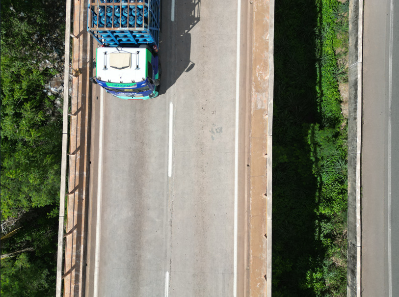

Metodologia BIM
Modelagem da Informação da Construção aplicada à gestão e manutenção de Obras de Arte Especiais.
Consolidação das diretrizes técnicas e estratégicas para a nova fase da infraestrutura de transportes.

Alinhamento e capacitação para a gestão de OAEs no território nacional.
O Workshop PROARTE 2026 marca um momento decisivo na trajetória da manutenção e reabilitação de estruturas no Brasil. Este encontro reunirá especialistas, gestores e profissionais da engenharia para consolidar diretrizes, apresentar soluções modernas e promover a integração entre os principais agentes do setor.
Diretrizes para avaliação, preservação e extensão da vida útil de pontes, viadutos e demais estruturas.
Uso de novas ferramentas, dados, inspeções, monitoramento e metodologias modernas aplicadas à gestão estrutural.
Painéis e debates focados nos processos, tecnologias e diretrizes que estão redefinindo a engenharia de infraestrutura no Brasil.
Modelagem da Informação da Construção aplicada à gestão e manutenção de Obras de Arte Especiais.
Acompanhamento sistemático e contínuo do comportamento estrutural de pontes, viadutos e estruturas especiais.
Sistemas de gerenciamento, inventário, priorização e tomada de decisão para investimentos em infraestrutura viária.
Aplicação de metodologias paramétricas para padronização, contratação e otimização de projetos estruturais.
Avaliação estrutural e priorização de ações para tomada de decisão assertiva, preventiva e estratégica.
Critérios técnicos para inspeção, manutenção, recuperação, reabilitação e reconstrução de estruturas.
Diretrizes que estabelecem novos paradigmas de excelência, transparência e eficiência na gestão pública.
estabelece critérios e procedimentos técnicos para o planejamento, gerenciamento e execução das ações esperadas de manutenção, reabilitação, recuperação e substituição de Obras de Arte Especiais (OAE) e implantação de estruturas de contenções a serem contratadas no âmbito do Programa de Manutenção e Reabilitação de Estruturas-PROARTE.
Da estruturação inicial do programa à consolidação de uma nova etapa técnica e normativa para a gestão de estruturas.
Início do programa voltado à reabilitação e adequação de Obras de Arte Especiais da malha rodoviária federal.
Avanço na estruturação dos procedimentos técnicos aplicáveis às obras e serviços no âmbito do programa.
Ampliação das discussões técnicas e ações de capacitação voltadas ao desenvolvimento do PROARTE.
Consolidação das novas diretrizes técnicas e estratégicas para o planejamento, gerenciamento e execução das ações do programa.
O evento será realizado presencialmente na sede do DNIT, no coração de Brasília.
Setor de Autarquias Norte (SAUN), Quadra 3, Lote A
Brasília/DF — CEP: 70040-902
Vagas limitadas. Junte-se aos principais especialistas do país para discutir o futuro da infraestrutura rodoviária.
Realizar Inscrição Agora